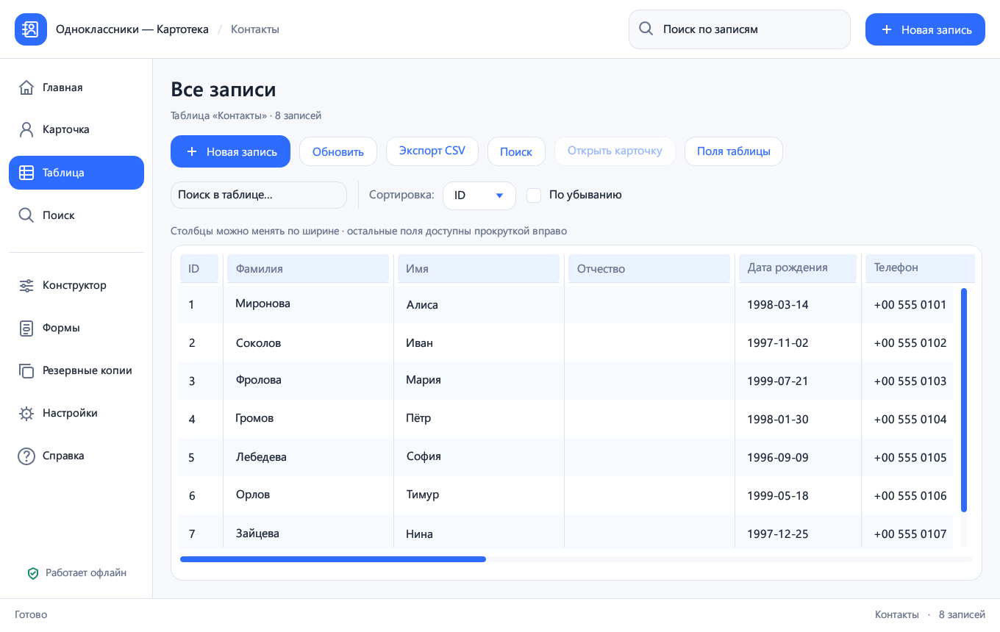

Картотека
Храните карточки людей, коллекции и другие списки на своём компьютере. Таблицы, собственные поля, фотографии, документы, поиск и резервные копии — в одном приложении.
Выпуск · 0.5.0Перед началомWindows 11 x64. Права администратора не нужны. EXE не подписан.

Что внутри
Установка, функции, данные, проверка.
Установка и запуск
Запустите Kartoteka-0.5.0-Setup.exe и оставьте предложенную папку текущего пользователя. Права администратора и Rust не требуются. Перед обновлением сохраните изменения и закройте старое окно. Для запуска без установки распакуйте весь переносной ZIP: EXE и три DLL должны находиться рядом.
Работает локально
Без аккаунта и облака, без телеметрии. Данные лежат в папке пользователя и не шифруются; адреса открываются только по вашему щелчку.
Локально · офлайнФункции
Проверено
- Автоматические проверки на GitHub Actions: форматирование, сборка, 39 тестов
- Контрольные суммы SHA-256 для файлов выпуска (SHA256SUMS.txt)
- Версия 0.5.0 и описание изменений
- Интерфейс и документация на русском, немецком и английском
- Установщик проверен по протоколу в RELEASE-CHECKS.md
Попробовать в браузере
Учебная картотека с выдуманными записями: поиск, открытие карточки, добавление и изменение записи. Всё только в памяти — после перезагрузки страницы возвращается исходный пример.
Что умеет программа
- Карточка записи и общая таблица с изменяемой шириной столбцов.
- Собственные таблицы и 11 типов полей: короткий и длинный текст, целые и десятичные числа, дата, время, дата и время, флажок, URL, фото и документ.
- Фотографии с предпросмотром, управляемые локальные копии документов и ссылки на сайты.
- Поиск по всей выбранной таблице, фильтр загруженных строк и экспорт CSV.
- Резервное копирование базы вместе с вложениями и восстановление с защитным снимком.
- Светлая тема, масштаб 80–150%, сворачиваемое меню и русский, немецкий, английский интерфейс.
Требования и ограничения
Проверено на Windows 11 x64. EXE не подписан. Таблица показывает до 2000 строк, поиск — до 500 результатов. Свободное перетягивание полей формы и импорт Microsoft Access не реализованы. Системный DPI 125/150% и два монитора отдельно не проверены; качество сглаживания зависит от рендера egui. Программа не отправляет телеметрию; основные функции работают офлайн.
Права и использование
Исходный код открыт для просмотра; это не открытая лицензия. Неизменённый релиз можно скачать и запускать для личного использования. Подробности — RIGHTS.ru.md; права на сторонние компоненты — в third-party/README.md.